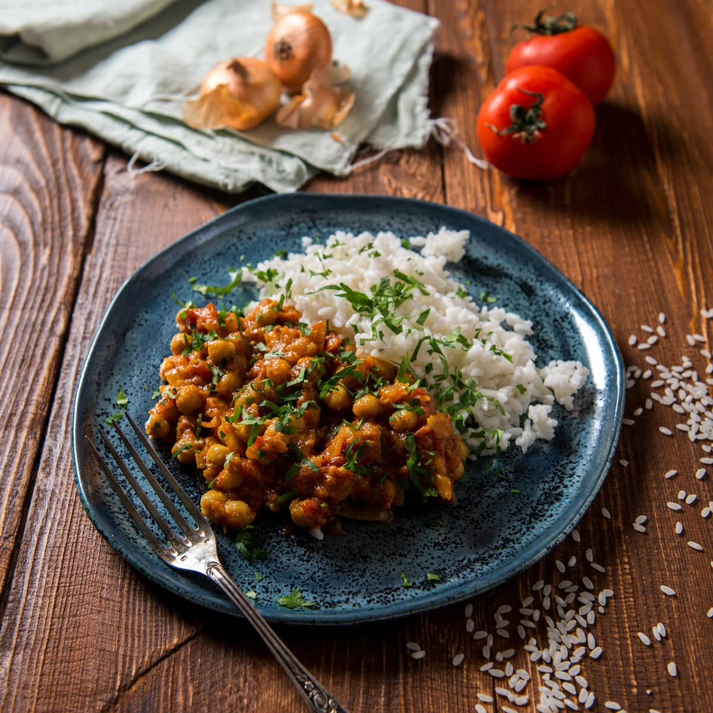

Chickpea Curry with Steamed Rice
This Easy Chickpea curry is the perfect weeknight dinner: it is quick and easy to make, it comes together in one pot, and it uses staple pantry ingredients so you can make curry any time the craving hits.
Ingredients
- 2 tablespoons vegetable oil or coconut oil
- 1 medium onion, sliced
- 3 cloves garlic, minced
- 1/4 teaspoon crushed red pepper flakes
- 2 tablespoons curry powder
- 1 teaspoon cumin
- 1 (15 ounce) can crushed tomatoes
- 1 (13.5 ounce) can coconut milk
- 2 (15 ounce) cans chickpeas, drained and rinsed
- Salt and pepper, to taste
- Chopped fresh cilantro and lime wedges, for garnish (optional)
- Naan bread and rice, to serve (optional)
Steps
- In a large, heavy bottomed pot or high-walled pan, heat the oil over medium-low. Add the sliced onion, garlic, and crushed red pepper to the pot. Cook, stirring occasionally, until the onion is softened and deep golden, about 15 minutes. Add a tablespoon of water at a time if the onions get dry.
- Increase the heat to medium. Add the curry powder and cumin and stir until toasted, about 1 minute. Add the crushed tomatoes and gently scrape the bottom of the pan with a wooden or rubber spoon to release the any browned spices or onions stuck to the bottom.
- Pour in the coconut milk and add the chickpeas the pot. Stir and reduce to low heat. Let simmer until the sauce is thickened and the chickpeas are slightly softened, about 10 minutes, stirring occasionally. Season with salt and pepper to taste, and adjust other seasonings as necessary.
- Garnish with chopped cilantro and serve with lime wedges over basmati rice and/or with naan.